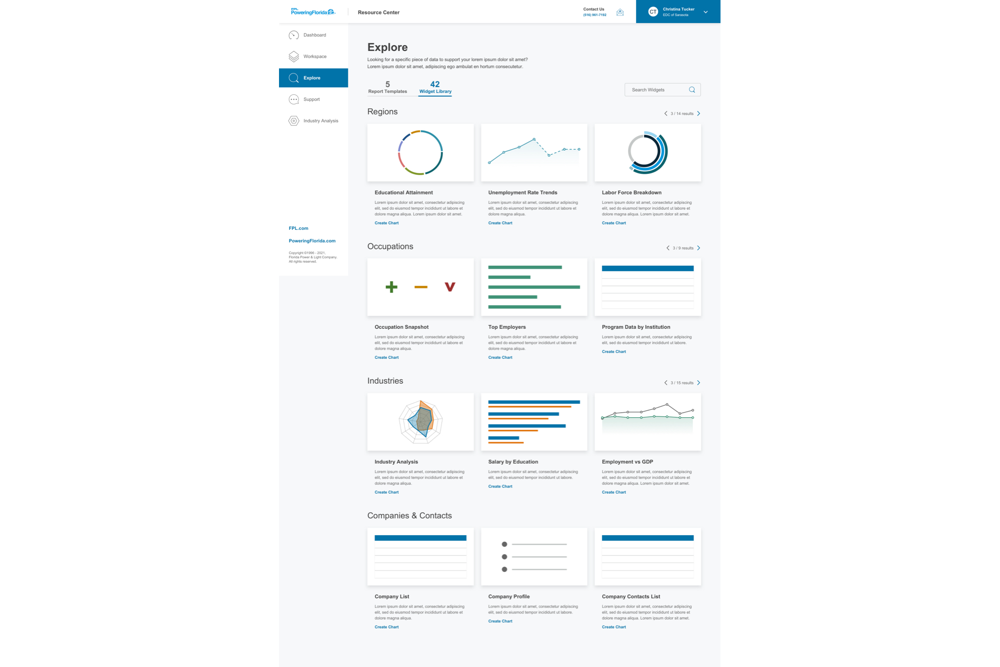
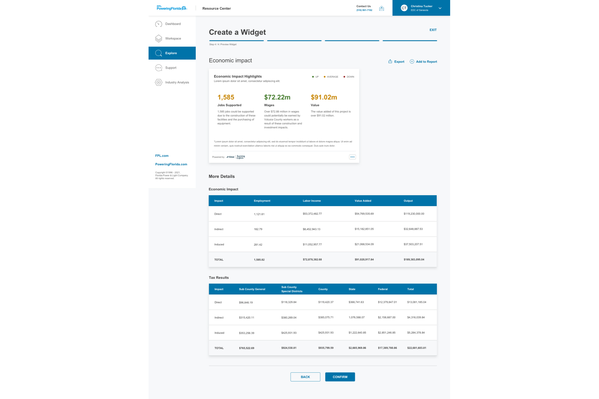
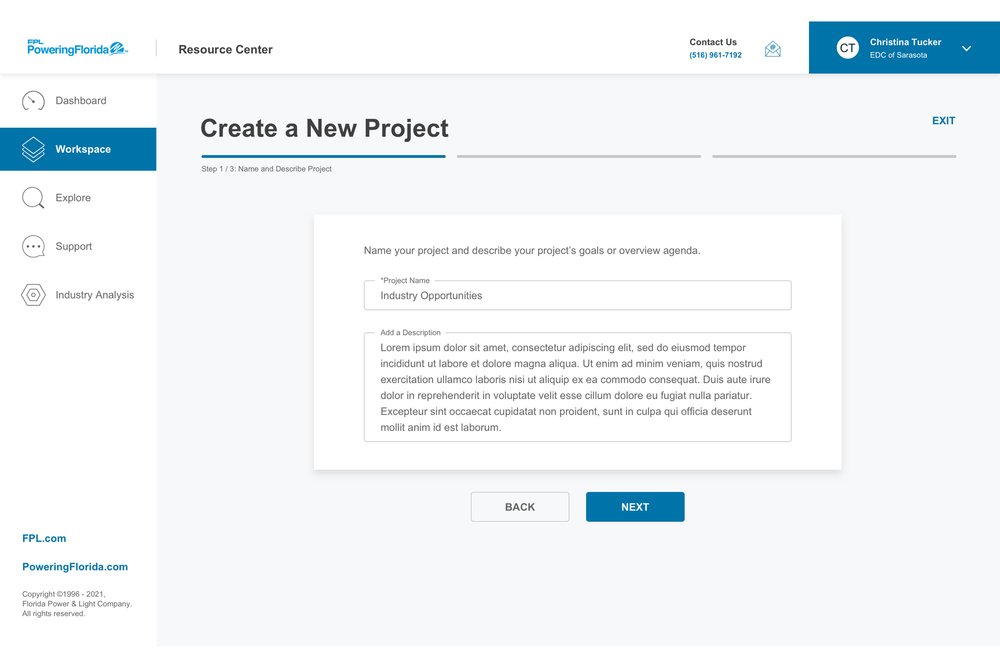
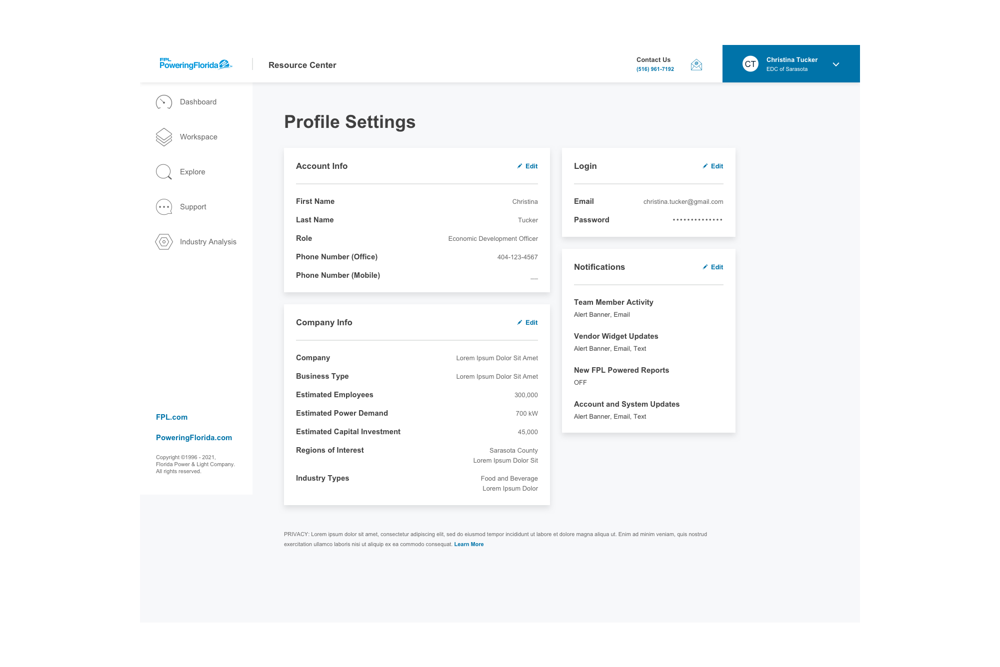

Powering Florida is a business arm of FPL focused on economic development for municipalities across the state. Their flagship tool, the Resource Center, provides data insights for business owners, government officials, and economic development teams making location and growth decisions. The tool needed a major overhaul — to help users be more proactive in their research, consume information at a glance, and collaborate across their organization. As Design Lead, I spearheaded discovery of the system as it stood, identified new opportunities, and partnered with designers to create Resource Center 2.0.
The information architecture made it hard to navigate to key features. Users couldn't find what they needed without a lot of back-and-forth.
The interface overwhelmed users with dense data without context — no visual hierarchy, no aesthetic minimalism, and no guidance on where to look.
Entering tasks felt friction-heavy. The system didn't prevent or recover from errors — users got blocked, with little explanation.
A three-phase engagement: Discovery (audit + interviews + competitive scan), Conceptual (affinity mapping + sketches + information architecture), and Design (production-ready UI partnered with the visual design team). I led each phase, mentored junior designers through interviews and synthesis, and aligned stakeholders on the future state of Resource Center.
Surface the value on the signup page, back it up with key data points, and ensure data is actionable, relevant, and interpretable for users.
Let users define their needs, teach them how to use the available tools, and incorporate interactive elements wherever possible.
Minimize the back-and-forth by prioritizing navigation options, categorizing content by user goals, and anticipating user questions.
It's as if you knew exactly what I was thinking without me having to explain how it works. Our power users will be overall very happy with how modernized the Resource Center is going to be, and how it will make their everyday tasks easy and simple to do.— FPL Stakeholder



